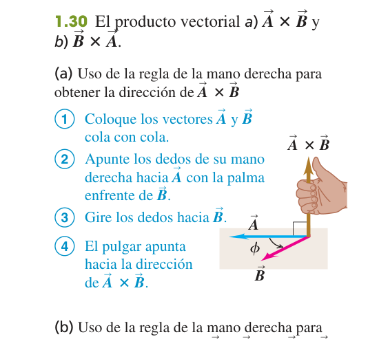

Unidades, cantidades físicas y vectores
El "kit de herramientas" antes de hacer física: cómo medir, cómo redondear con honestidad y cómo sumar magnitudes que tienen dirección (vectores).
0Antes de empezar U p.1
Prerrequisitos: trigonometría básica (seno, coseno, tangente, Pitágoras), notación científica y potencias de diez, y despejar ecuaciones sencillas. No hace falta cálculo todavía: este tema es "aritmética con cuidado" más geometría de vectores.
Mapa del tema: primero fijamos qué es medir (unidades SI) y cómo convertir entre unidades sin errores; luego aprendemos a no mentir sobre la precisión de un resultado (cifras significativas) ni sobre el esfuerzo de un cálculo (estimaciones); y por último introducimos los vectores — el lenguaje que usa TODO el resto de la asignatura (posición, velocidad, fuerza, campo…) — con sus dos "productos" (escalar y vectorial), que reaparecerán en trabajo (tema 6), momento angular (tema 10) y magnetismo.
Revisando los 16 exámenes de convocatorias pasadas disponibles, no hay ningún ejercicio dedicado a este tema: se trata casi siempre de forma transversal (un dato con las unidades "raras" que hay que convertir, o un ángulo que hay que descomponer en $x,y$ dentro de un problema de otro tema). Por eso los ejercicios resueltos de esta página son del solucionario oficial (E), no de examen — pero las técnicas (conversión de unidades, cifras significativas, componentes, producto escalar y vectorial) las usarás en casi todos los demás temas.
1La física y cómo resolver problemas
La física es una ciencia experimental: no se inventan leyes por elegancia, se proponen a partir de observaciones y se ponen a prueba con más experimentos. Ninguna ley es "para siempre y en todo caso": tiene un intervalo de validez. Por ejemplo, las leyes de Newton describen perfectamente una pelota o un coche, pero fallan a velocidades cercanas a la de la luz (ahí manda la relatividad) o a escala atómica (ahí manda la mecánica cuántica). Saber los límites de una ley es tan importante como saber la ley.
U p.2Para resolver cualquier problema de física, en vez de lanzarte a las fórmulas:
- Identificar: ¿qué conceptos y variables intervienen? ¿qué te piden exactamente?
- Plantear: elige las ecuaciones relevantes, dibuja un esquema, decide un modelo idealizado (p. ej. "partícula puntual", "sin fricción").
- Ejecutar: haz el álgebra y los números, arrastrando las unidades.
- Evaluar: ¿el resultado tiene sentido? ¿las unidades son las correctas? ¿el orden de magnitud es razonable?
Un modelo idealizado es una simplificación deliberada: tratar la Tierra como una esfera perfecta, un cable como si no tuviera masa, un gas como "ideal". No es hacer trampa: es quedarte con lo que importa para el problema y descartar lo que complica sin cambiar la respuesta de forma relevante. U p.3
2Estándares y unidades
Una cantidad física es un número junto con una unidad. Decir "la mesa mide 1.5" no significa nada: hace falta decir "1.5 metros". El número por sí solo no es una medida.
U p.4El sistema que usamos es el SI (Sistema Internacional), con tres unidades básicas para la mecánica:
| Magnitud | Unidad | Definición (la que usa U, 14ª ed.) |
|---|---|---|
| Tiempo | segundo (s) | Duración de 9 192 631 770 ciclos de la radiación del cesio-133 |
| Longitud | metro (m) | Distancia que recorre la luz en el vacío en 1/299 792 458 s |
| Masa | kilogramo (kg) | Cilindro patrón de platino-iridio en Sèvres (así lo define todavía esta edición del libro; desde 2019 el kilogramo se redefinió mediante constantes físicas, pero U no usa aún esa definición) |
Para no escribir números larguísimos o diminutos, se usan prefijos: kilo- (k, ×10³), mili- (m, ×10⁻³), micro- (µ, ×10⁻⁶), nano- (n, ×10⁻⁹). Un kilómetro son 1000 metros; un milisegundo, una milésima de segundo.
3Uso y conversión de unidades
Un factor de conversión como $\dfrac{1\ \text{km}}{1000\ \text{m}}$ vale exactamente 1 (numerador y denominador son la misma distancia, solo escrita distinto). Multiplicar por él no cambia la cantidad física, solo cambia su "disfraz" (las unidades en que la escribes). La clave es elegir el factor orientado para que la unidad que quieres eliminar se cancele arriba con abajo.
Toda ecuación física debe ser dimensionalmente consistente: no puedes sumar metros con segundos. Para convertir unidades, multiplica por una cadena de fracciones que valgan 1, orientadas para cancelar lo que sobra:
$$763.0\ \tfrac{\text{mi}}{\text{h}}\times\frac{1.609\ \text{km}}{1\ \text{mi}}\times\frac{1000\ \text{m}}{1\ \text{km}}\times\frac{1\ \text{h}}{3600\ \text{s}} = 341.0\ \tfrac{\text{m}}{\text{s}}$$ U p.6El récord de velocidad terrestre es 763.0 mi/h. Convierte a m/s.
- Identifica los factores de conversión que necesitas (apéndice E de U): 1 mi = 1.609 km (no exacto, redondeado a 4 cifras), y los exactos 1 km = 1000 m, 1 h = 3600 s.
- Encadena los factores unitarios de manera que se cancelen mi, luego km, luego h, dejando m y s.
- Multiplica los números: $763.0 \times 1.609 \times 1000 / 3600 = 341.0$.
- Resultado: $341.0\ \text{m/s}$ (4 cifras significativas, coherente con el dato de partida).
Cuando la unidad está elevada al cuadrado o al cubo (área, volumen), el factor de conversión también hay que elevarlo a esa potencia: $1\ \text{cm}^3 = (10^{-2}\ \text{m})^3 = 10^{-6}\ \text{m}^3$, no $10^{-2}\ \text{m}^3$.
Antes de dar por bueno cualquier resultado numérico, comprueba las unidades (análisis dimensional): si te piden una velocidad y te sale en kg, algo se rompió por el camino. Es la revisión más barata y más eficaz de la estrategia IPEE (paso "Evaluar").
4Incertidumbre y cifras significativas
Ninguna medida es infinitamente precisa: toda medida lleva una incertidumbre ($\pm$ algo), que depende del instrumento. Las cifras significativas de un número son los dígitos que se conocen con confianza más uno estimado; comunican cuánto te puedes fiar del dato. Escribir "12.0 mm" en vez de "12 mm" no es adorno: dice que conoces la décima de milímetro. Precisión no es lo mismo que exactitud: un instrumento puede dar medidas muy repetibles (precisas) pero desviadas de calibración (poco exactas), o al revés.
U p.8- Multiplicación / división: el resultado tiene tantas cifras significativas como el dato de partida con menos cifras.
- Suma / resta: el resultado se redondea a la posición decimal menos precisa de los datos (no a un número de cifras).
- Redondea (no trunques) y hazlo solo al final de la cadena de cálculos: el redondeo intermedio acumula error.
- La notación científica deja las cifras significativas sin ambigüedad: $3\times10^8$ tiene 1 cifra; $3.00\times10^8$ tiene 3.
Aplicar la regla de "menos cifras" (la de × y ÷) a una resta o suma. En $12 - 5.98$, contando cifras significativas saldría $6.0$ (2 cifras, por el "12"), pero eso es la regla equivocada: en una resta manda el decimal menos preciso, y "12" no tiene decimales, así que $6.02 \to 6$ (sin decimales).
5Estimaciones y órdenes de magnitud
A veces no necesitas un número exacto, sino saber si algo es "del orden de 10, de 1000 o de un millón". Un cálculo de orden de magnitud usa números redondos y factores de aproximación (entre 2 y 10) para llegar a una respuesta con sentido, sin pretender más precisión de la que tienen los datos.
U p.10En una estimación solo tiene sentido dar 1 cifra significativa (o directamente la potencia de diez): escribir "3×10⁸ gal/día" es correcto; escribir "3.14×10⁸ gal/día" sugiere una precisión que no tienes.
6Vectores y suma de vectores
Un escalar es un número con unidad y ya está: la temperatura, la masa, el tiempo. Un vector además tiene dirección: no es lo mismo caminar 3 km hacia el norte que 3 km hacia el este, aunque la distancia recorrida (escalar) sea la misma. El ejemplo típico es el desplazamiento: el vector que va del punto de partida al punto de llegada, sin importar el camino seguido.
Escalar: magnitud descrita por un solo número (con signo y unidad). Vector: magnitud descrita por una magnitud (siempre positiva) y una dirección; se representa con una flecha, cuya longitud es proporcional a la magnitud. Dos vectores son iguales si tienen la misma magnitud y la misma dirección, aunque estén dibujados en sitios distintos. El negativo de un vector $\vec A$ es $-\vec A$: misma magnitud, dirección opuesta.
U p.11$|\vec A+\vec B| \ne A+B$ en general: las magnitudes NO se suman directamente, solo cuando $\vec A$ y $\vec B$ son paralelos. Si son perpendiculares, por ejemplo, la magnitud de la suma se calcula con Pitágoras, no sumando. La resta se define como sumar el negativo: $\vec A-\vec B = \vec A+(-\vec B)$ — se dibuja como $\vec A$ más el vector $\vec B$ invertido. Multiplicar un vector por un escalar $c$ da $c\vec A$: si $c>0$ mantiene la dirección (y cambia la magnitud), si $c<0$ la invierte (vector antiparalelo).
U p.12Método cola-punta: coloca la cola del segundo vector en la punta del primero; la suma va del origen del primero al final del segundo. Método del paralelogramo: con ambos vectores desde el mismo origen, la suma es la diagonal del paralelogramo que forman. Ambos dan el mismo resultado, y la suma es conmutativa y asociativa.
U p.127Componentes de vectores
Sumar vectores gráficamente (con regla y transportador) es lento e impreciso. Es mucho mejor descomponer cada vector en sus "sombras" sobre los ejes $x$ e $y$ (sus componentes) y sumar número con número: la parte horizontal con la horizontal, la vertical con la vertical.
Si $\vec A$ forma un ángulo $\theta$ medido desde el eje $+x$ en sentido antihorario:
$$A_x = A\cos\theta \qquad A_y = A\sin\theta$$y a la inversa, conocidas las componentes:
$$A = \sqrt{A_x^2+A_y^2} \qquad \tan\theta = \frac{A_y}{A_x}$$ U p.14Las fórmulas $A_x=A\cos\theta$, $A_y=A\sin\theta$ solo valen si $\theta$ se mide desde el eje $+x$ en sentido antihorario (U Ejemplo 1.6, p. 15). Si el ángulo del enunciado se mide desde el eje $+y$, o hacia $-y$, o en sentido horario, hay que convertirlo primero a la convención estándar (o cambiar seno por coseno con cuidado) — es justo la dificultad del problema 1.31 más abajo. Además, la calculadora da $\theta=\arctan(A_y/A_x)$ siempre en el rango $(-90°,90°)$, es decir, solo "acierta" si $\vec A$ está en el 1er o 4º cuadrante. Si $A_x<0$ (2º o 3º cuadrante), hay que sumar 180° al resultado de la calculadora. Dibujar siempre un croquis rápido para saber en qué cuadrante cae el vector evita ambos errores.
Si $\vec R = \vec A+\vec B$, entonces cada componente se suma por separado:
$$R_x = A_x+B_x \qquad R_y = A_y+B_y$$y luego se recupera magnitud y ángulo de $\vec R$ con las fórmulas anteriores. Este método se generaliza a cualquier número de vectores y a tres dimensiones (añadiendo $R_z=A_z+B_z$).
U p.168Vectores unitarios
Un vector unitario tiene magnitud 1 y solo indica dirección. Los vectores $\hat\imath$, $\hat\jmath$, $\hat k$ apuntan a lo largo de $+x$, $+y$, $+z$ respectivamente. Cualquier vector se escribe como combinación de ellos:
$$\vec A = A_x\hat\imath + A_y\hat\jmath + A_z\hat k$$Esta notación hace que sumar, restar o multiplicar por un escalar sea "componente a componente", sin dibujar nada.
U p.18Con $\vec D = (6.00\hat\imath+3.00\hat\jmath-1.00\hat k)$ m y $\vec E=(4.00\hat\imath-5.00\hat\jmath+8.00\hat k)$ m, halla $|2\vec D-\vec E|$.
- $2\vec D = (12.00\hat\imath+6.00\hat\jmath-2.00\hat k)$ m.
- $2\vec D-\vec E = [(12.00-4.00)\hat\imath+(6.00-(-5.00))\hat\jmath+(-2.00-8.00)\hat k]$ m $= (8.00\hat\imath+11.00\hat\jmath-10.00\hat k)$ m.
- Magnitud: $\sqrt{8.00^2+11.00^2+10.00^2}=\sqrt{285}=16.9$ m.
9Producto escalar
El producto escalar mide "cuánto apunta un vector en la dirección del otro": geométricamente, $\vec A\cdot\vec B = A\,(B\cos\phi)$ es $A$ multiplicado por la proyección de $\vec B$ sobre la dirección de $\vec A$. Si son paralelos, el producto es máximo positivo; si son perpendiculares, es cero; si apuntan en direcciones opuestas, es negativo. Reaparecerá en el tema 6 como la definición de trabajo: $W=\vec F\cdot\vec s$.
donde $\phi$ es el ángulo entre los dos vectores. El resultado es un escalar (un número, no un vector), y el orden no importa: $\vec A\cdot\vec B=\vec B\cdot\vec A$. Para los vectores unitarios: $\hat\imath\cdot\hat\imath=\hat\jmath\cdot\hat\jmath=\hat k\cdot\hat k=1$ y $\hat\imath\cdot\hat\jmath=\hat\jmath\cdot\hat k=\hat k\cdot\hat\imath=0$ (por eso al desarrollar $\vec A\cdot\vec B$ solo sobreviven los términos $A_xB_x$, $A_yB_y$, $A_zB_z$).
U p.20Con $A=4$, $B=5$ y $\phi=77°$: $\vec A\cdot\vec B = 4\times5\times\cos77° = 4.50$.
Como $\phi<90°$, el producto sale positivo (coherente: los vectores apuntan "más o menos" en la misma dirección). Si $\phi$ fuera mayor de 90°, el coseno sería negativo y también lo sería el producto.
U p.2110Producto vectorial
El producto vectorial de $\vec A$ y $\vec B$ es, en módulo, $A$ multiplicado por la componente de $\vec B$ perpendicular a $\vec A$ — geométricamente, el área del paralelogramo que forman los dos vectores. Es máximo cuando son perpendiculares y cero cuando son paralelos (justo lo contrario que el producto escalar). El resultado no es un número sino otro vector, perpendicular a los dos de partida. Reaparecerá en la torca (tema 10) y el momento angular.
Magnitud: $|\vec A\times\vec B| = AB\sin\phi$ (con $\phi$ el ángulo menor entre ambos). Dirección: perpendicular al plano de $\vec A$ y $\vec B$, dada por la regla de la mano derecha (dedos de $\vec A$ hacia $\vec B$ por el camino más corto; el pulgar señala $\vec A\times\vec B$) — el sistema $\hat\imath,\hat\jmath,\hat k$ de U es siempre dextrógiro (mano derecha), nunca levógiro.
El producto vectorial es anticonmutativo: $\vec A\times\vec B = -(\vec B\times\vec A)$. Para los vectores unitarios: $\hat\imath\times\hat\jmath=\hat k$, $\hat\jmath\times\hat k=\hat\imath$, $\hat k\times\hat\imath=\hat\jmath$ (y al revés cambia el signo). En componentes:
$$C_x = A_yB_z-A_zB_y \qquad C_y = A_zB_x-A_xB_z \qquad C_z = A_xB_y-A_yB_x$$ U p.22
$\vec A$ de magnitud 6, sobre el eje $+x$; $\vec B$ de magnitud 4, a 30° de $\vec A$. $|\vec A\times\vec B| = 6\times4\times\sin30° = 12$, dirección $+z$ (sale del papel, por la mano derecha).
U p.24Olvidar que el orden importa: $\hat\jmath\times\hat\imath=-\hat k$, no $+\hat k$. Si te equivocas de orden en un producto cruz, el resultado sale con el signo (y la dirección) invertidos.
11Ejercicios resueltos
Como se indica en «Antes de empezar», este tema no tiene ningún ejercicio de examen real dedicado en los 16 exámenes revisados; los nueve ejercicios siguientes son del solucionario oficial (E), ordenados de más sencillo a más elaborado.
Problema 1.10 — conversión de unidades E
a) Un coche va a 60 mi/h. ¿A cuántos ft/s equivale? b) La aceleración de la gravedad es 32 ft/s². ¿Cuánto es en m/s²? c) La densidad del agua es 1.0 g/cm³. ¿Cuánto es en kg/m³?
- a) $60\ \tfrac{\text{mi}}{\text{h}}\times\dfrac{5280\ \text{ft}}{1\ \text{mi}}\times\dfrac{1\ \text{h}}{3600\ \text{s}} = 88\ \text{ft/s}$ (conversión exacta, sin pérdida de cifras).
- b) $32\ \tfrac{\text{ft}}{\text{s}^2}\times\dfrac{0.3048\ \text{m}}{1\ \text{ft}} = 9.7536\ \text{m/s}^2$; como el dato "32" solo tiene 2 cifras significativas, se redondea a $9.8\ \text{m/s}^2$.
- c) $1.0\ \tfrac{\text{g}}{\text{cm}^3}\times\dfrac{1\ \text{kg}}{1000\ \text{g}}\times\left(\dfrac{100\ \text{cm}}{1\ \text{m}}\right)^3 = 1.0\times10^3\ \text{kg/m}^3$: el factor de longitud se eleva al cubo porque la unidad original está al cubo.
Problema 1.14 — cifras significativas E
Un rectángulo mide 12 mm por 5.98 mm. Con el número correcto de cifras significativas, calcula: a) el área; b) la razón ancho/largo; c) el perímetro; d) la diferencia largo−ancho; e) la razón largo/ancho.
- a) Área $=12\times5.98=71.76 \to$ (2 cifras, manda el "12") $= 72\ \text{mm}^2$.
- b) Razón $5.98/12=0.4983\to 0.50$ (2 cifras).
- c) Perímetro $=2(12+5.98)=2\times17.98=35.96\to 36\ \text{mm}$: aquí manda la regla de suma (decimal menos preciso: "12" no tiene decimales), no la de cifras.
- d) Diferencia $=12-5.98=6.02\to 6\ \text{mm}$ (mismo criterio de suma/resta: sin decimales).
- e) Razón inversa $12/5.98=2.0067\to 2.0$ (2 cifras).
Problema 1.18 — estimación de orden de magnitud E
Estima cuántos galones de gasolina se consumen al día en EE. UU., suponiendo 2 coches por cada 3 personas, que cada coche recorre 10 000 mi/año y rinde 20 mi/gal.
- El enunciado no da la población: hay que estimarla, que es justo la habilidad que se practica en este apartado (U §1.6). Tomamos $\approx3\times10^8$ habitantes (EE. UU., orden de magnitud).
- Número de coches: $3\times10^8 \times \tfrac{2}{3} = 2\times10^8$ coches.
- Recorrido diario por coche: $10\,000\ \text{mi/año} / 365\ \text{día/año} \approx 27\ \text{mi/día}$.
- Consumo por coche: $27\ \text{mi/día} / 20\ \text{mi/gal} \approx 1.4\ \text{gal/día}$.
- Total: $2\times10^8 \times 1.4 \approx 3\times10^8\ \text{gal/día}$ (≈1 galón por habitante al día).
Problema 1.31 — suma y resta de vectores por componentes E
$\vec A$ mide 8.00 m y apunta en la dirección $-y$. $\vec B$ mide 15.0 m y forma 30.0° con el eje $+y$ (es decir, 60.0° con el eje $+x$). Calcula: a) $\vec A+\vec B$; b) $\vec B+\vec A$; c) $\vec A-\vec B$; d) $\vec B-\vec A$ (magnitud y ángulo en cada caso).
- Componentes: $A_x=0,\ A_y=-8.00$; $B_x=15.0\sin30.0°=7.50$, $B_y=15.0\cos30.0°=12.99$.
- a) $\vec C=\vec A+\vec B$: $C_x=7.50$, $C_y=4.99$ → $C=\sqrt{7.50^2+4.99^2}=9.01\ \text{m}$; $\theta=\arctan(4.99/7.50)=33.6°$ (1er cuadrante, ambas componentes positivas, sin corrección).
- b) $\vec B+\vec A=\vec A+\vec B$ por conmutatividad: mismo resultado, 9.01 m a 33.6° (el solucionario da 33.7° por redondear $B_y$ a 13.0 m antes de dividir; sin ese redondeo intermedio sale 33.6°).
- c) $\vec D=\vec A-\vec B$: $D_x=-7.50$, $D_y=-20.99$ → $D=\sqrt{7.50^2+20.99^2}=22.3\ \text{m}$; $\arctan(-20.99/-7.50)=70.3°$, pero como ambas componentes son negativas (3er cuadrante) hay que sumar 180°: $\theta=250.3°$.
- d) $\vec B-\vec A=-\vec D$: misma magnitud 22.3 m, dirección opuesta a c): $\theta=70.3°$.
Problema 1.38 — vectores unitarios y resta E
$\vec A=4.00\hat\imath+7.00\hat\jmath$, $\vec B=5.00\hat\imath-2.00\hat\jmath$. Calcula: a) $|\vec A|$ y $|\vec B|$; b) $\vec A-\vec B$; c) magnitud y ángulo de $\vec A-\vec B$.
- a) $|\vec A|=\sqrt{4.00^2+7.00^2}=8.06$; $|\vec B|=\sqrt{5.00^2+2.00^2}=5.39$.
- b) $\vec A-\vec B=(4.00-5.00)\hat\imath+(7.00-(-2.00))\hat\jmath = -1.00\hat\imath+9.00\hat\jmath$.
- c) $R=\sqrt{(-1.00)^2+9.00^2}=9.06$. $\arctan(9.00/-1.00)=-83.7°$, pero $R_x<0$ y $R_y>0$ (2º cuadrante) → suma 180°: $\theta=96.3°$.
Problema 1.42 — producto escalar y ángulo entre vectores E
Con los mismos $\vec A=4.00\hat\imath+7.00\hat\jmath$ y $\vec B=5.00\hat\imath-2.00\hat\jmath$: a) calcula $\vec A\cdot\vec B$; b) halla el ángulo entre ambos vectores.
- a) $\vec A\cdot\vec B = A_xB_x+A_yB_y = (4.00)(5.00)+(7.00)(-2.00) = 20.0-14.0 = 6.00$.
- b) $\cos\phi = \dfrac{\vec A\cdot\vec B}{AB} = \dfrac{6.00}{8.06\times5.39} = 0.138$ → $\phi = 82.1°$.
- Comprobación de sentido: el producto salió positivo y $\phi<90°$, coherente entre sí.
Problema 1.44 — producto vectorial de los mismos vectores E
Calcula $\vec A\times\vec B$ para $\vec A=4.00\hat\imath+7.00\hat\jmath$ y $\vec B=5.00\hat\imath-2.00\hat\jmath$.
- $\vec A\times\vec B = (4\hat\imath+7\hat\jmath)\times(5\hat\imath-2\hat\jmath) = 4(-2)(\hat\imath\times\hat\jmath) + 7(5)(\hat\jmath\times\hat\imath)$ (los términos $\hat\imath\times\hat\imath$ y $\hat\jmath\times\hat\jmath$ son nulos).
- Con $\hat\imath\times\hat\jmath=\hat k$ y $\hat\jmath\times\hat\imath=-\hat k$: $=-8\hat k - 35\hat k = -43.0\hat k$.
- Comprobación con la fórmula de componentes: $C_z=A_xB_y-A_yB_x = 4(-2)-7(5) = -8-35=-43$. Coincide.
- Magnitud del producto vectorial: como el resultado es puramente $-\hat k$, su magnitud es directamente el coeficiente, $|\vec A\times\vec B| = 43.0$.
Problema 1.46 — producto vectorial con regla de la mano derecha E
$\vec A$ mide 2.80 cm, a 60.0° sobre el eje $+x$. $\vec B$ mide 1.90 cm, a 60.0° bajo el eje $+x$. Calcula: a) $\vec A\times\vec B$ (magnitud y dirección); b) $\vec B\times\vec A$.
- Ángulo entre ambos: $\phi = 60.0°+60.0° = 120°$ (uno está por encima del eje x, el otro por debajo).
- a) $|\vec A\times\vec B| = 2.80\times1.90\times\sin120° = 4.61\ \text{cm}^2$. Girando de $\vec A$ a $\vec B$ por el camino corto se gira en sentido horario, así que la mano derecha da el pulgar hacia $-z$ (hacia dentro del papel).
- Comprobación con componentes: $A_x=1.40$, $A_y=2.42$; $B_x=0.95$, $B_y=-1.65$; $C_z=A_xB_y-A_yB_x = 1.40(-1.65)-2.42(0.95) = -2.31-2.30=-4.61$. Signo negativo confirma $-z$.
- b) $\vec B\times\vec A = -(\vec A\times\vec B)$: misma magnitud 4.61 cm², dirección $+z$ (fuera del papel).
Problema 1.51 — aplicación con densidad (radio de un planeta) E
Un planeta tiene 5.5 veces la masa de la Tierra ($m_T=5.97\times10^{24}$ kg) pero la misma densidad que Neptuno (1.76 g/cm³). Calcula su radio y compáralo con el de la Tierra ($r_T=6.37\times10^6$ m).
- Masa: $m = 5.5\times5.97\times10^{24} = 3.28\times10^{25}\ \text{kg}$.
- Densidad en unidades SI: $\rho = 1.76\ \text{g/cm}^3 = 1760\ \text{kg/m}^3$ (factor de longitud al cubo, como en el problema 1.10c).
- Volumen: $V = m/\rho = 1.87\times10^{22}\ \text{m}^3$.
- Radio (esfera): $V=\tfrac{4}{3}\pi r^3 \Rightarrow r = \left(\dfrac{3V}{4\pi}\right)^{1/3} = 1.65\times10^4\ \text{km}$.
- Razón con la Tierra: $r/r_T = 2.58$. Como el dato "5.5" solo tiene 2 cifras significativas: $r\approx1.6\times10^4\ \text{km}\approx2.6\,r_T$ (el solucionario da $1.64\times10^4$ km y $2.57\,r_T$ por un redondeo intermedio del volumen; sin ese redondeo el valor exacto es $1.645\times10^4$ km, $2.58\,r_T$).
12Chuleta y lista de comprobación
| Concepto | Fórmula |
|---|---|
| Componentes | $A_x=A\cos\theta,\ A_y=A\sin\theta$ |
| Magnitud y ángulo | $A=\sqrt{A_x^2+A_y^2},\ \tan\theta=A_y/A_x$ (corregir cuadrante) |
| Suma por componentes | $R_x=A_x+B_x,\ R_y=A_y+B_y$ |
| Producto escalar | $\vec A\cdot\vec B=AB\cos\phi=A_xB_x+A_yB_y+A_zB_z$ |
| Producto vectorial | $|\vec A\times\vec B|=AB\sin\phi$; $C_z=A_xB_y-A_yB_x$ (mano derecha) |
| Cifras significativas | ×÷: manda el dato con menos cifras. +−: manda el decimal menos preciso. |
- Sé convertir unidades encadenando factores unitarios (incluyendo potencias para área/volumen).
- Sé aplicar las reglas de cifras significativas distinguiendo ×÷ de +−.
- Sé hacer una estimación de orden de magnitud con 1 cifra significativa.
- Sé sumar y restar vectores por componentes y corregir el cuadrante del ángulo.
- Sé calcular un producto escalar e interpretar su signo (paralelo/perpendicular/opuesto).
- Sé calcular un producto vectorial (magnitud y dirección con la mano derecha) e interpretar su signo con $C_z=A_xB_y-A_yB_x$.